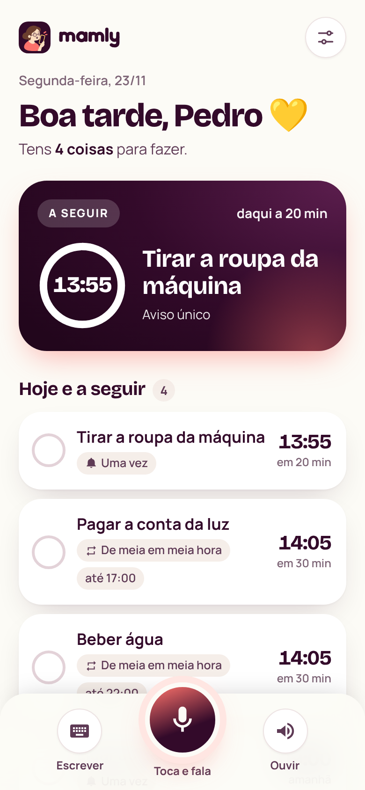
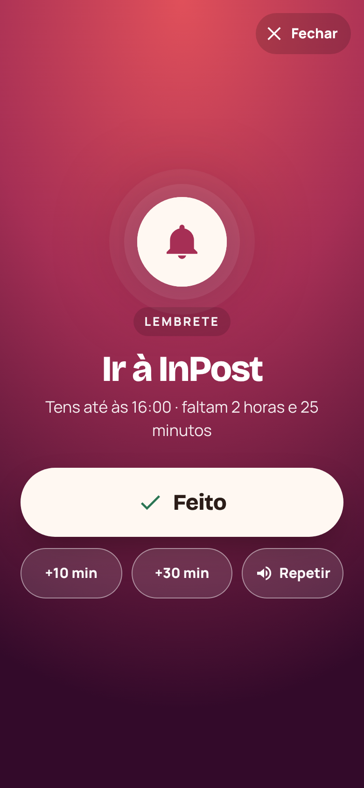
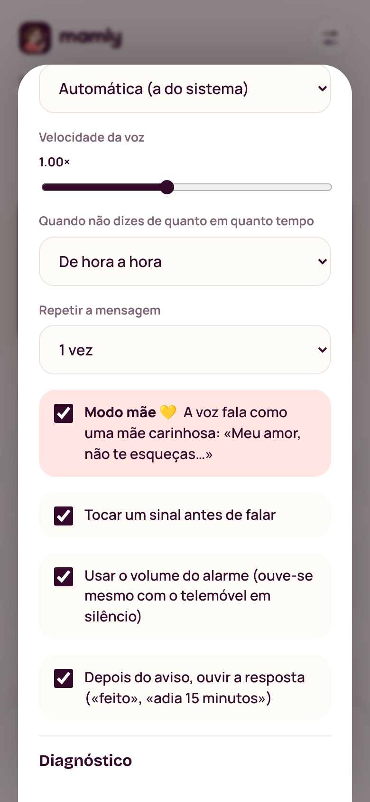
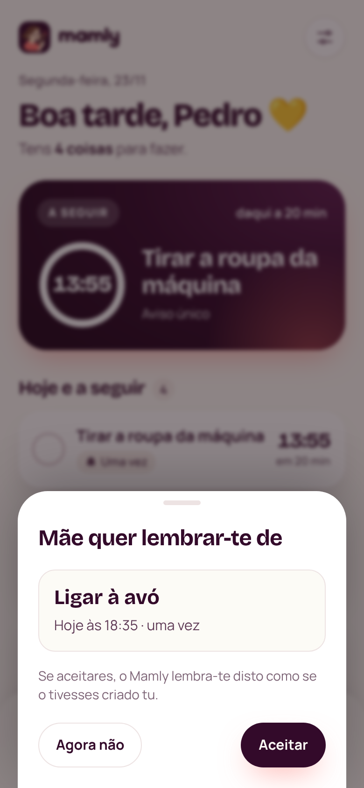
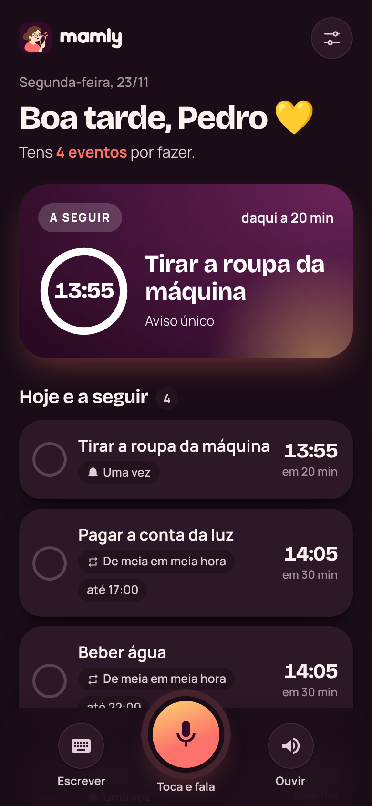

Fala contigo
Diz-te o que tens de fazer e quanto tempo falta. Com frases variadas, para não te habituares a ignorar.
Pensado para PHDA. Útil para toda a gente.
Dizes o que tens de fazer. O Mamly lembra-te à hora certa, em voz alta, e insiste até fazeres. Mesmo com o telemóvel bloqueado no bolso.

📱 Aparece uma notificação. Deslizas para o lado. Um minuto depois, já não te lembras do que era.
📝 Escreves listas. Que ficam esquecidas numa app que nunca abres.
⏰ Metes alarmes. Que desligas a meio do sono e não dizem o que tens de fazer.
O Mamly é diferente: fala contigo, diz-te exatamente o quê, quanto tempo falta e volta a lembrar até tratares do assunto. Como uma mãe faria.
Carregas no microfone e falas normalmente:
De 30 em 30 minutos das 13h às 17h avisa-me para pagar a conta da luz
O quê, de quanto em quanto tempo e até quando. Também percebe daqui a 20 minutos
, amanhã às 9
ou de meia em meia hora
.
À hora certa, mesmo bloqueado. Respondes feito
ou adia 15 minutos
sem tocar no ecrã. Antes do prazo, dá-te um último aviso.
Uma coisa de cada vez, em grande — pensado para cérebros que se distraem.




Diz-te o que tens de fazer e quanto tempo falta. Com frases variadas, para não te habituares a ignorar.
Usa os alarmes do sistema: o telemóvel acorda, toca um sinal e fala, mesmo no bolso.
De hora a hora, de meia em meia hora, de 30 em 30 segundos… e um último aviso antes do prazo.
«Feito», «adia 15 minutos» ou «apaga». Sem procurar botões.
«Meu amor, não te esqueças…» — carinho de mãe, sem sermões. Liga-se nas definições.
Manda um lembrete a alguém por WhatsApp. A pessoa toca no link e aceita.
Sem contas e sem registos. Os teus lembretes ficam só no teu telemóvel.
Percebe a forma como falamos e responde com voz portuguesa.
Modo mãe 💛
Liga o modo mãe e o Mamly passa a falar contigo com o carinho (e a insistência) de uma mãe. Escolhe uma voz e ouve:
Não. O Mamly foi pensado para cabeças com PHDA, mas serve a qualquer pessoa que ande com mil coisas na cabeça: pais e mães, estudantes, quem trabalha por turnos, quem toma medicação a horas, ou simplesmente quem se esquece das coisas.
Sim, é grátis e sem subscrições.
Por agora a app é só para Android. No iPhone podes usar a versão web, mas aí os avisos só tocam com a página aberta.
Os lembretes ficam guardados só no teu telemóvel. Não há contas nem servidores do Mamly. Quando falas para o microfone, o áudio é transformado em texto pelo serviço de voz do Android (normalmente da Google). Lê a política de privacidade.
Sim. O Mamly usa os alarmes do sistema Android. Em algumas marcas (Samsung, Xiaomi) convém permitir que a app funcione em segundo plano — a própria app mostra-te como.
Instala a voz «Português (Portugal)» nas definições do Android, em «Saída de texto para voz», e escolhe a Google como motor. A app ajuda-te a lá chegar.
Os avisos funcionam sem internet. Para perceber o que dizes ao microfone e para as vozes «naturais», o Android pode precisar de ligação.
Apoia o projeto
O Mamly é grátis e feito com carinho em Portugal. Se a tua marca, empresa ou projeto quer apoiar o Mamly, fala connosco.
Quero apoiarO Mamly lembra-se por ti.